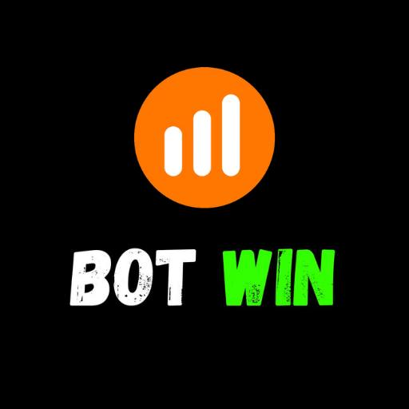
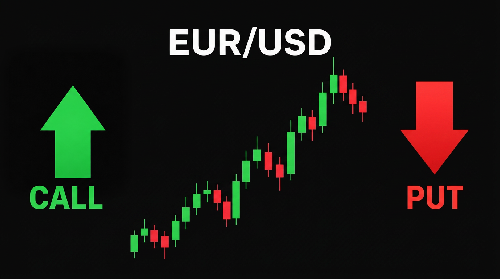

VEJA O PASSO A PASSO ABAIXO, É MUITO SIMPLES.
Entre no grupo do Telegram para receber o link da melhor corretora para você começar a operar e receber indicações gratuitas sobre a valorização ou desvalorização das moedas em tempo real 👇

É assim que funciona a tela da operação: CALL quando a moeda sobe 📈 e PUT quando a moeda desce 📉.
(as operações duram 1 minuto)